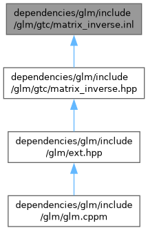

Questo grafo mostra quali altri file includono direttamente o indirettamente questo file:

Vai al codice sorgente di questo file.
Namespace | |
| namespace | glm |
| Core features | |
Funzioni | |
| template<typename T, qualifier Q> | |
| GLM_FUNC_QUALIFIER mat< 3, 3, T, Q > | glm::affineInverse (mat< 3, 3, T, Q > const &m) |
| template<typename T, qualifier Q> | |
| GLM_FUNC_QUALIFIER mat< 4, 4, T, Q > | glm::affineInverse (mat< 4, 4, T, Q > const &m) |
| template<typename T, qualifier Q> | |
| GLM_FUNC_QUALIFIER mat< 2, 2, T, Q > | glm::inverseTranspose (mat< 2, 2, T, Q > const &m) |
| template<typename T, qualifier Q> | |
| GLM_FUNC_QUALIFIER mat< 3, 3, T, Q > | glm::inverseTranspose (mat< 3, 3, T, Q > const &m) |
| template<typename T, qualifier Q> | |
| GLM_FUNC_QUALIFIER mat< 4, 4, T, Q > | glm::inverseTranspose (mat< 4, 4, T, Q > const &m) |
Generato da